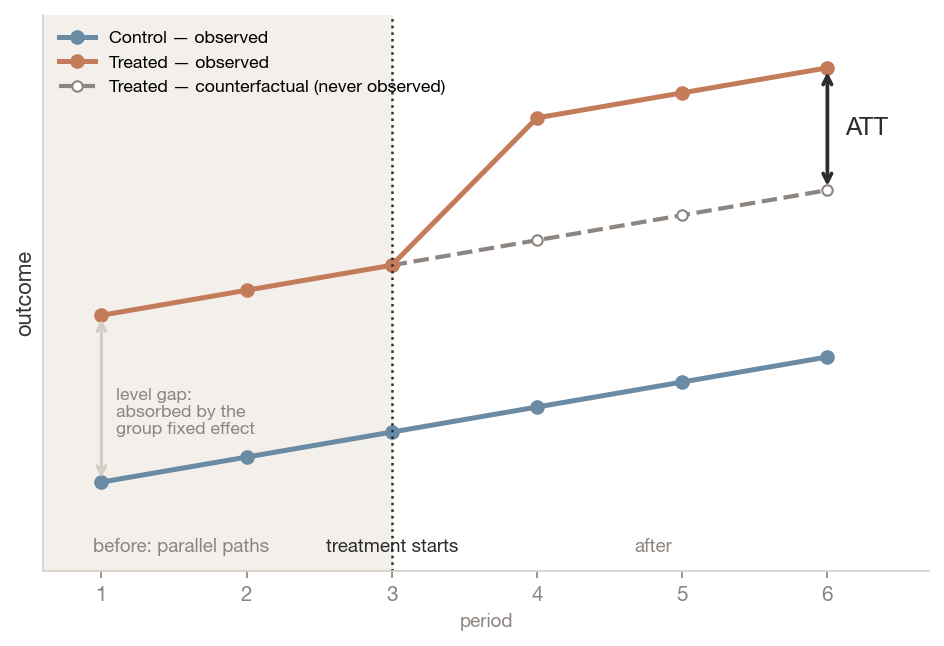
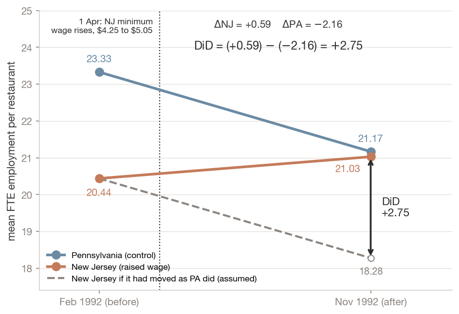
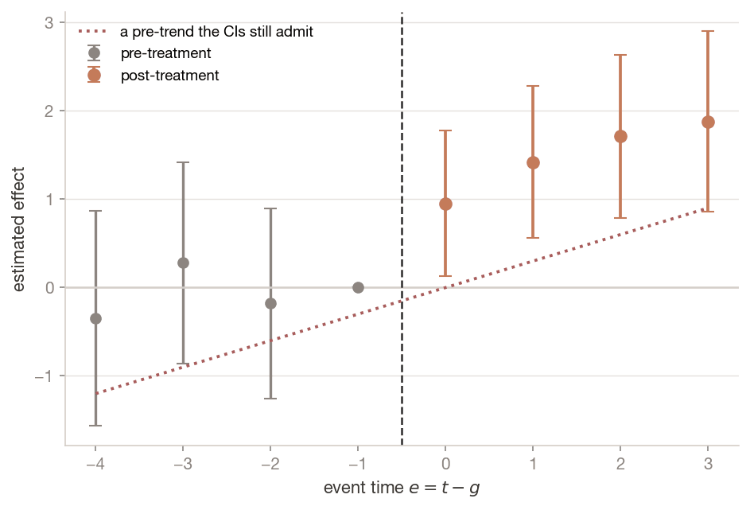
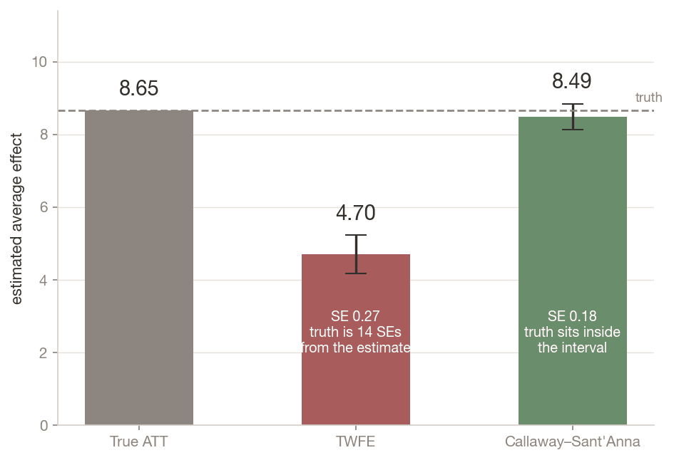
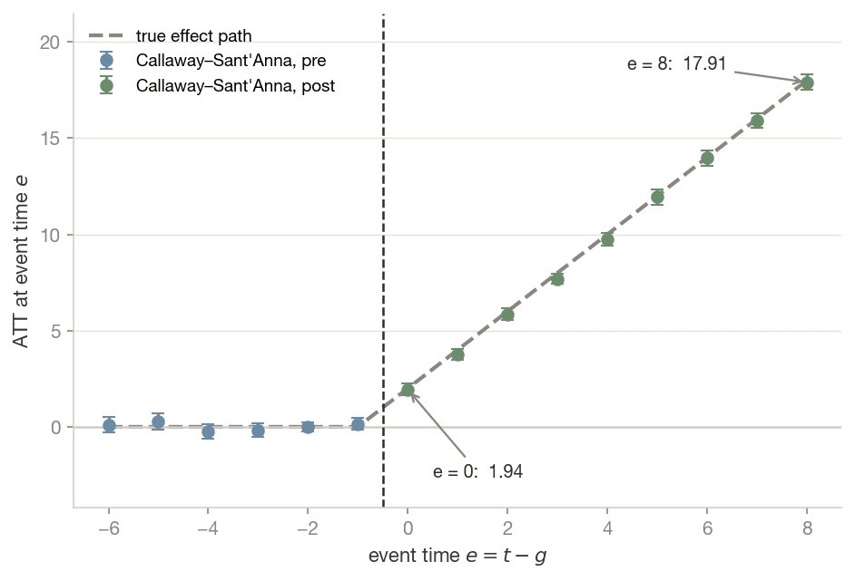
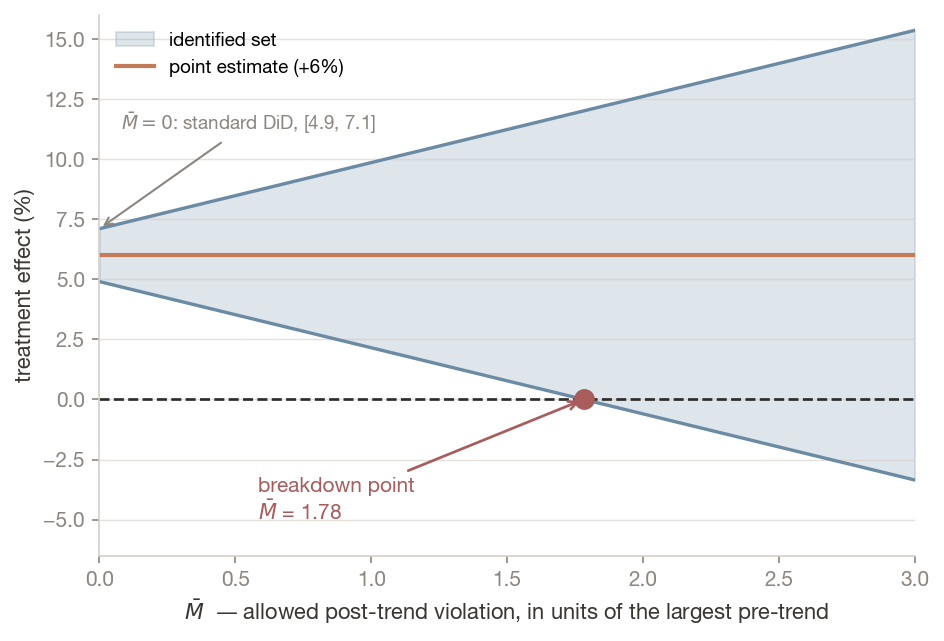

Identification is an argument, not a function call.
Dr. Richeng Piao
Department of Economics Northeastern University

Learning Objectives
LO1
Understand — state parallel trends formally, explain why it is fundamentally untestable, and say what a pre-trend test does and does not establish
LO2
Apply — estimate a canonical 2×2 by hand, by regression, and with cluster-robust inference; replicate Card & Krueger (1994)
LO3
Analyze — diagnose why two-way fixed effects fails under staggered adoption, using Goodman-Bacon to quantify the weight on forbidden comparisons
LO4
Evaluate — select and defend a heterogeneity-robust estimator, and report partial-identification bounds under formalised violations of parallel trends
Retrieval Practice
Chapter 10. What does the backdoor criterion require of you before it will license a causal claim?
That you name and measure every confounder on a backdoor path. The heroic part is the measuring.
Chapter 9. What does randomisation give you that observational adjustment does not?
Balance on unobservables, not just on the covariates you happened to collect.
Chapter 7. At what level should standard errors be clustered?
At the level treatment is assigned — not the level at which data happens to be observed. Hold that one; it returns in Section 6.
A Standard Regression That Gets It Wrong
A policy starts in different states in different years, and it helps every state it reaches. We know the true average effect, because we built the data.
The truth
+8.65
The usual regression reports
+4.70 (SE 0.27)
Outcome on “treated yet?” with state and year fixed effects. About half the truth, and it looks precise.
Why: to judge the states treated later, it uses states treated earlier as the comparison, and those states are still changing from their own treatment. If every state is eventually treated, it gets worse: −0.96 for a true effect of +9.56, the wrong sign.
Today: before you trust a regression, ask which comparisons it makes.
Section 1
The Canonical Two-by-Two
Two groups. Two periods. One assumption doing all the work.
Why Two Differences
Naive comparison 1 — before vs after
Look at the treated group before and after. Confounded by everything else that happened in the meantime: a recession, a seasonal cycle, a wage change next door.
Naive comparison 2 — treated vs control, after
Compare the two groups in the post period. Confounded by whatever made the groups different in the first place — the selection problem from Chapter 9.
Take both differences. The change in the treated group, minus the change in the control group. The first subtraction removes anything fixed about each group. The second removes anything common to both over time.
What survives is the treatment effect — if the only remaining difference between the groups' trajectories is the treatment.
The trade: Chapter 10 asked you to measure the confounders. DiD asks you to find a group that would have moved the same way without the treatment, and lets that group absorb everything you cannot see.
In words: the treated group's change, net of the control group's change over the same window. $G_i = 1$ marks the group that gets treated; $\delta$ is the difference-in-differences estimand.
In words: the average effect of treatment on the units that were actually treated, in the post period.
Not the ATE. This is not the $\tau$ from Chapter 9. DiD identifies the effect for the treated group, which may differ from the effect treatment would have had on the controls. When treatment is targeted — and policy treatment usually is — that distinction is substantive, not pedantic.
In words: in the world where treatment never happened, both groups' average outcomes would have changed by the same amount.
Not been equal — changed equally. Levels may differ by any amount at all.
The dashed line is never observed. No amount of data recovers it: it is the fundamental problem of causal inference, in a new place.
Three Lines, One Bracket
Result. Under parallel trends and no anticipation, $\delta = \text{ATT}$.
Add and subtract $E[Y_{i1}(0) \mid G_i = 1]$. The treated group is untreated at $t=0$, so $Y_{i0} = Y_{i0}(0)$; it is treated at $t=1$, so $Y_{i1} = Y_{i1}(1)$. Then:
Internalise the shape, not the algebra. The entire identifying content of difference-in-differences sits in that second bracket.
Everything else in this lecture — event studies, Goodman-Bacon, Callaway–Sant'Anna, Honest DiD — is an attempt to make that bracket credible, bound it, or estimate it under weaker conditions.
$\alpha$ — intercept: the control group in the pre period
$\gamma$ — the common time trend
$\beta$ — the fixed level difference between groups
$\delta$ — the DiD estimate, on the interaction
In words: $\delta$ is numerically identical to the four-means calculation. The regression is preferred because it gives you standard errors and takes covariates — not because it does anything different. (Watch the notation: $\alpha$ here is a regression intercept, not Chapter 8's significance level.)
Key concept — slopes, not levels
DiD does not require the groups to be similar. New Jersey and Pennsylvania restaurants differ in wages, rents and clientele, and it does not matter — any time-invariant difference is absorbed by $\beta$. What must hold is that the two groups' untreated trajectories would have moved in parallel.
This is why "the groups aren't comparable" is usually a misdirected criticism — and why "employment in your control state was already trending differently" is a devastating one.
Room Poll: Before
A state raises its minimum wage by 10%. By what percent does employment at its fast-food restaurants change? Type a number: negative means fewer jobs, positive more, 0 no change.
NUID ends in an odd digit: group Odd
NUID ends in an even digit: group Even
A rough guess is fine. You will get the same question again in two minutes.
Answers so far: odd — · even —
Read Your Paragraph
Scan to open this slide on your phone. Your phone shows one short paragraph. Odd and even NUIDs get different paragraphs.
Read it once, keep it to yourself, then answer the same question again on the next slide.
On 1 April 1992 New Jersey raised its minimum wage from \$4.25 to \$5.05. Pennsylvania, next door, did not. Two economists surveyed about 400 fast-food restaurants on both sides of the border, before the rise and after it. Employment in the New Jersey restaurants did not fall compared with the Pennsylvania ones.
Even NUID · the neutral paragraph
The federal minimum wage has been \$7.25 an hour since July 2009. States may set a higher one, and most of the country now lives in a state that does: Massachusetts has been at \$15.00 since January 2023. Fast-food and restaurant jobs are among the most common minimum-wage jobs in the country.
Room Poll: After
A state raises its minimum wage by 10%. By what percent does employment at its fast-food restaurants change? Type a number: negative means fewer jobs, positive more, 0 no change.
NUID ends in an odd digit: group Odd
NUID ends in an even digit: group Even
The same question. Answer what you think now: changing your answer is fine, and so is keeping it.
Answers so far: odd — · even —
Your Room, Two Differences
mean answer, %
Before
After
Change
Odd · read the evidence
—
—
—
Even · read the neutral text
—
—
—
Difference-in-differences
—
n before: odd —, even — · n after: odd —, even —
The even row is the counterfactual: what being asked twice does to an answer, with no evidence. Taking it away removes everything both groups share.
Parallel trends, by design: the split was a coin flip on your NUID, so without the paragraph both rows would have moved alike. Card and Krueger had to argue it.
Card & Krueger (1994)

1 April 1992. New Jersey raised its minimum wage from \$4.25 to \$5.05. Pennsylvania did not. 410 fast-food restaurants — Burger King, KFC, Wendy's, Roy Rogers — surveyed in February and November 1992.
Standard competitive theory makes a clean prediction: raise the price of labour above market clearing and employers buy less of it. Employment in NJ should fall relative to PA.
It did not. The result was contested for a decade, generated a large replication literature, and is part of the body of work for which Card shared the 2021 Nobel Prize.
What matters is the design. They did not measure and control for everything that differs between NJ and PA restaurants — an impossible task. They found a control group whose employment path plausibly tracked New Jersey's, and let it absorb the confounders wholesale.
Lab 11 parses this from the original archive — fixed-width public.dat plus codebook — and gets +2.75 against the published +2.76.
Poll: The Referee's Objection
A referee writes: "Pennsylvania restaurants employ 14% more staff than New Jersey restaurants on average, so they are not a valid control group."
What is the correct response?
A) Agree — the groups must be balanced on levels for DiD to work
B) Re-weight the PA sample to match NJ's employment distribution
C) The level gap is absorbed by the group fixed effect — only the trends need to be parallel
D) Drop the largest PA restaurants until the group means match
Answer: C — slopes, not levels
A gap in levels is not a problem: the group fixed effect removes any difference that stays the same over time (PA’s 23.33 against NJ’s 20.44 on the last slide). A gap in slopes would be: "PA employment was already trending differently." That objection you must answer.
Why B and D are tempting: they make the two groups look alike in levels, which is what matching needs. DiD does not need equal levels. It compares changes, so what it needs is equal changes had there been no treatment.
Section 2
Parallel Trends Is an Assumption, Not a Test
What a flat pre-trend does — and does not — establish.
You Cannot Verify It
The assumption is about a counterfactual — what the treated group's outcome would have done absent treatment. That path is unobserved by construction.
What researchers check instead is whether the groups moved in parallel before treatment. With several pre-periods, estimate a coefficient for each and see whether they are flat. This is the event study, and it is informative.
$\alpha_i, \gamma_t$ — unit and time fixed effects
$e = t - g_i$ — event time
$g_i$ — the cohort: the period unit $i$ is first treated
$\delta_e$ — the effect at event time $e$
In words: each $\delta_e$ for $e < 0$ is a pre-trend coefficient and should sit near zero; each $\delta_e$ for $e \ge 0$ traces the dynamic path of the effect. We omit $e = -1$, normalising $\delta_{-1} = 0$.
Two cautions. The reference period is a normalisation, not a fact — every coefficient is measured relative to $e = -1$, and a different base period shifts the whole picture. And in staggered designs this specification is itself contaminated, for reasons that occupy the next two sections.
Read This Plot Twice

First pass
"Pre-trends are flat." Every pre-treatment coefficient is individually indistinguishable from zero. This is what gets reported.
Second pass
The intervals also admit the dotted line — a pre-trend large enough to generate the entire post-treatment effect.
The plot is consistent with both stories. Nothing in it distinguishes them.
Three Problems That Compound
1. Low power
Few periods, wide standard errors. Failing to reject a null of zero pre-trends is weak evidence when you had little chance of rejecting it. The useful diagnostic is the power of that test against an economically meaningful violation, not the $p$-value on the pre-trends.
2. Pre-test bias
Conditioning your analysis on having passed a pre-test changes the sampling distribution of the estimator you report, and conventional standard errors do not reflect that conditioning. Structurally this is Chapter 10's collider problem, with your own publication decision as the collider.
The assumption concerns the post period. A policy adopted precisely because a shock was anticipated can show perfectly flat pre-trends and violently non-parallel counterfactual trends. Anticipation effects do the same in reverse, contaminating the pre-period itself.
The Sentence Not To Write
Common misconception
"Insignificant pre-trends prove that parallel trends holds."
They do not, for three separate reasons: the test may lack the power to detect the violations that matter; conditioning on passing it biases the subsequent inference; and the assumption is about the post-treatment counterfactual, which the pre-period does not observe.
A flat event study is a necessary condition, weak evidence, and a reasonable thing to show. It is not a proof — and describing it as one in a seminar will not go well.
Think like an economist
Instead of "did my pre-trend test pass?", ask: what would have had to be happening in the world, absent this policy, for my estimate to be spurious — and is that story plausible?
If a state adopted a job-training subsidy because its manufacturing base was already collapsing, its untreated path was heading down while the control's was flat. Parallel trends fails regardless of what the pre-period shows. The assumption is defended with institutional knowledge about why treatment happened where and when it did. No test substitutes for knowing the policy's history.
Discussion: The Test That Fires
In Lab 11 you meet a dataset where the true treatment effect is exactly zero, the groups are on visibly diverging trends, and the DiD estimate comes back large and significant. The pre-trend test fires — it catches the problem.
1. Why is that the lucky case rather than the reassuring one?
2. Write the sentence you would put in a paper describing a pre-trend test that did not fire — without overclaiming.
Pairs, three minutes. Then two cold-calls.
Debrief: The Asymmetry
A test that fires is informative. A test that does not fire does not establish parallel trends: the trends may really be parallel, or you may have lacked the power to see a difference.
That is the lab's own wording, and it is the sentence to carry out of this room.
A sentence you can defend
"Pre-treatment coefficients are individually indistinguishable from zero, but the confidence intervals do not exclude a differential trend of the magnitude that would account for our estimate; we therefore report sensitivity bounds in Table 5."
Note what that sentence does: it names the power, not the $p$-value, and it commits you to producing something better later. We build that something in Section 6.
Section 3
Staggered Adoption and the Forbidden Comparison
What the most-run regression in the discipline actually computes.
Two-Way Fixed Effects
Real policies roll out in waves: states adopt at different times. This is staggered adoption, and for thirty years the standard response was to extend the two-by-two:
Yit = αi + γt + δDit + εit
αi, unit fixed effect — each unit’s own level. PA employing more than NJ every period: absorbed.
γt, period fixed effect — whatever hits every unit in the same period: a recession, a season.
Dit, treated yet? — 0 before unit i adopts, 1 from then on.
period
1
2
3
4
5
6
7
8
9
10
11
12
Early (from 4)
0
0
0
1
1
1
1
1
1
1
1
1
Late (from 8)
0
0
0
0
0
0
0
1
1
1
1
1
Never
0
0
0
0
0
0
0
0
0
0
0
0
δ — the one number read off as “the” effect of treatment. What is it, exactly, when units adopt at different times?
Goodman-Bacon (2021) asked what $\hat{\delta}$ actually is: a weighted average of every two-by-two comparison in the panel, with weights set by group sizes and timing, not by anything the researcher chose.
Four Comparisons Live In This Panel
The Forbidden Comparison
Comparison 4 uses the already-treated early group as the control for the late group, over periods 4–12. It is fair only if the early group’s effect has stopped changing. A toy example, numbers made up:
Its weight is positive. The two-by-two itself is pulled down, here below zero.
TWFE Chooses Its Own Weights
δ̂TWFE = Σkwkδ̂k, Σkwk = 1
δ̂k — the estimate from the k-th two-by-two: slide 21’s comparisons 1 to 4, each its own difference-in-differences.
wk, its Bacon weight — set by how big that subsample is and how much treatment varies inside it. You did not choose it, and you cannot see it without decomposing.
Why it lasted thirty years. Under homogeneous, constant treatment effects, every $\hat{\delta}_k$ equals the same $\delta$, the weights sum to one, and TWFE is exactly fine. The forbidden comparison is harmless when there is nothing moving for it to subtract.
The counterintuitive part. Under heterogeneous or dynamic effects, the estimate is not merely noisy or attenuated. $\hat{\delta}^{TWFE}$ need not lie in the convex hull of the underlying effects at all — it can sit outside the range of every true effect in your data.
Poll: What Makes It Dangerous?
You are handed a staggered-adoption panel and a TWFE coefficient.
Which single feature of the design makes the forbidden comparison most dangerous?
A) A large number of adoption cohorts
B) Treatment effects that grow over time since adoption
C) An unbalanced panel with missing periods
D) Very different group sizes across cohorts
Answer: B — dynamic effects
The already-treated "control" misleads only if its own effect is still changing. If effects stay constant, the forbidden comparison is harmless, which is why TWFE looked fine for thirty years.
Why A and D are tempting: both change how much weight each comparison gets. But if every comparison gave the same answer, the weights would not matter. Growing effects are what make comparison 4 give a different, wrong answer.
Section 4
Building the Failure
The only way to prove an estimator is wrong is to run it on data where you know the answer.
A Panel Where We Know the Answer
The story (made up; simulated data, so we know the truth): broadband reaches 300 counties in waves over 12 years: 35% in year 4, 35% in year 8, 30% never. Outcome: new businesses per 10,000 people. The effect grows by 2.0 a year after broadband arrives, as firms learn to use it.
Write 8.65 down before you look at the next slide. Then compute how many standard errors away the truth is.
Confidently Wrong

True effect 8.65. TWFE reports 4.70 — a 46% understatement — with a standard error of 0.27.
The 95% confidence interval is roughly [4.17, 5.23].
The truth is far outside the interval: more than fourteen standard errors away.
More data would not fix this. It would tighten the interval around the wrong number.
Decomposing It
It Gets Worse Without a Never-Treated Group
In our panel, 30% of units are never treated and those clean comparisons carry 61% of the weight — which holds the damage to an understatement.
Re-run with every unit eventually treated: two waves, in years 3 and 7, no never-treated group. The forbidden comparisons now carry 75% of the weight.
TWFE returns −0.96 — precisely estimated and highly significant — for a policy whose true average effect is +9.56. The sign is wrong.
That design — everyone eventually treated — describes a great many real policy rollouts. It is also the design of Lab 11’s Diagnosis 2: TWFE −0.99 against a true +6.71.
Your Lab, Diagnosis 2: the Two Comparisons by Hand
Lab 11’s own panel: two cohorts of 60, treated at periods 3 and 12, no never-treated units, every true effect positive (mean 6.71). TWFE says −0.99. Here is where that number comes from.
Precision Is Not Accuracy
Common misconception
"TWFE bias is a small-sample or precision problem."
The bias is structural and does not vanish asymptotically. In our simulation the standard error is 0.27 and the error is 3.95. The estimator is confidently wrong, and increasing $n$ makes it more confident without making it less wrong.
This is the same lesson as Chapter 6's data defect identity and Chapter 10's confounding: precision and accuracy are different quantities, and only one of them responds to sample size.
Poll: Ten Times the Data
Your TWFE estimate is 4.70 (SE 0.27) against a true effect of 8.65. Your data vendor offers you ten times as many units, same design.
What happens?
A) The estimate converges toward 8.65
B) The standard error shrinks and the estimate stays near 4.70
C) The estimate becomes unbiased once $n$ exceeds the number of fixed effects
D) The bias falls at rate $1/\sqrt{n}$
Answer: B — more confident, equally wrong
The problem is which comparisons the regression averages, and with what weights, not noise. Ten times the units shrinks the noise around the same wrong average: the interval tightens around 4.70, and you feel surer of it.
Why D is tempting: for many estimators the bias does shrink as $n$ grows. This one does not: comparison 4 is just as forbidden with 3,000 units as with 300.
Section 5
Estimators That Work
Stop letting the regression choose comparisons. Build only the legitimate ones.
Group-Time Average Treatment Effects
Callaway and Sant’Anna (2021): one effect for every cohort g and period t, each from its own clean two-by-two.
Estimate 8.49; the chapter’s package run gives a standard error of 0.18, so the truth sits comfortably inside the interval. The same data that produced 4.70 under TWFE produces 8.49 once the forbidden comparisons are removed.
Aggregating by Event Time

Two things to read. Every pre-treatment coefficient is statistically indistinguishable from zero — as it must be, since we generated the data with no pre-trend. And the post-treatment coefficients climb by very nearly 2.0 per period, recovering the exact dynamic we injected.
This explains TWFE in one line
The effect at $e{=}8$ is 17.91. The effect at $e{=}0$ is 1.94.
When TWFE uses a unit eight periods into treatment as a control for a unit just entering treatment, it subtracts 17.91 worth of ongoing treatment effect and attributes the difference to the newly treated unit.
This is the key point of the chapter.
When You Doubt Parallel Trends: A Third Difference
Suppose a state policy applies only to workers under 30. You have the usual treated/control state contrast — but within each state you also have a group the policy could not touch.
In words: the second bracket estimates whatever was happening to the treated state relative to the control state that had nothing to do with the policy — a state-specific shock, a divergent local labour market, a data revision. Subtracting it removes that contamination from the first bracket.
The requirement is weaker than it looks. DDD does not require parallel trends to hold in either group separately. It requires only that any violation be common to both, so that it cancels in the subtraction (Olden & Møen 2022).
The cost. You are differencing three times on the same data, so standard errors widen. And if the policy affects the supposedly ineligible group at all — over-30 workers hired instead of under-30s — the second bracket contains part of the treatment effect and you have differenced away the thing you were measuring. The hard part is choosing a comparison group the treatment really cannot reach.
The Menu
Estimator
Idea
Callaway & Sant'Anna (2021)
ATT(g,t) against never- or not-yet-treated; aggregate explicitly
Sun & Abraham (2021)
Interaction-weighted; saturates cohort × event-time, decontaminating the event study
Wooldridge ETWFE (2025)
Fully saturated OLS with cohort-period interactions — stays inside a regression framework with familiar inference
Borusyak, Jaravel & Spiess (2024)
Imputation: fit the untreated model, impute $Y_{it}(0)$, average the residuals
de Chaisemartin & D'Haultfœuille (2020)
Robust to heterogeneity and to treatment switching back off again
Synthetic DiD (Arkhangelsky+ 2021)
Weights units and periods when parallel trends fails structurally
All are implemented in diff-diff, and in a well-behaved design the estimates should agree. When they disagree materially, that disagreement is itself the finding — it means the answer depends on the weighting, and the weighting depends on assumptions you should state.
Economist at Work: A Standing Order in Massachusetts
August 2022: Massachusetts let pharmacists dispense emergency contraception without an individual prescription. Qato, Guadamuz & Myerson (JAMA, 2024) compared it with Illinois and Connecticut, which did not.
Outcome: emergency-contraception fills at pharmacies per 100,000 women of reproductive age.
fills per 100,000 women
Before the order
After
Change
Massachusetts
78.5
105.3
+26.8
Illinois + Connecticut
45.8
48.4
+2.6
Difference-in-differences
26.8 − 2.6 =
+24.2
The paper reports +25.2 (a 32% rise): the same comparison, regression-adjusted. The covariates move it by about 1.
What if Illinois and Connecticut had risen more? Their change:
Massachusetts alone says +26.8. DiD says 26.8 − 2.6 = +24.2. The before-and-after is 1.1 times the effect.
What the design surfaces: the rise was driven by ulipristal, the prescription-only product, the one a pharmacist could not dispense before. A mechanism running through the policy’s own channel makes the DiD credible beyond parallel trends.
Discussion: When the Estimators Disagree
You run three heterogeneity-robust estimators on the same staggered panel.
Callaway–Sant'Anna
+6.1
Sun–Abraham
+5.8
Borusyak et al.
+1.4
What do you do — and what do you write?
Whole class, hands. Two minutes.
Debrief: Disagreement Is the Result
The wrong responses: picking the one you like; averaging them; reporting all three without comment.
These estimators differ in which comparisons they form and how they weight them. Material disagreement therefore says your answer is sensitive to the weighting — and the weighting encodes assumptions.
The write-up: name the assumption each estimator leans on hardest, identify which one your design plausibly violates, and report the range as a range. An imputation estimator that disagrees with a not-yet-treated estimator is telling you something specific about your untreated-outcome model.
This is the same stance as reporting a breakdown point instead of a pre-test — which is where we go next.
Section 6
Inference and Honest Bounds
Replace an assertion nobody can check with a number an expert can argue about.
Few Clusters
In a policy DiD the treatment is set by state, so the state is the cluster, and there are often few of them. Run a placebo where the true effect is zero: a correct 5% test should reject about 5% of the time.
The Wild Cluster Bootstrap
The remedy for few clusters. Assume no effect, then make fake datasets by flipping the sign of each whole state’s residuals at random (+1 or −1: Rademacher weights). Recompute the t each time; the real t is extreme only if few fake ones beat it. Whole states keep their year-to-year pattern.
From about 6 states, the bootstrap rejects close to 5%, where clustered standard errors still over-reject. The wider interval is the correct one.
With 4 states (2 treated) it swings the other way and almost never rejects: 4 states allow only 16 sign patterns. MacKinnon, Nielsen and Webb (2022): count your treated clusters.
Honest DiD: The Breakdown Point
Rambachan and Roth (2023): instead of assuming parallel trends exactly, allow the trend after treatment to break by up to M̄ times the largest break you can already see before treatment, and report every effect still consistent with the data. (Illustration: an estimate of +6%.)
Honest DiD: The Whole Band

The same estimate, +6%, read at three values of M̄. Every effect inside the band is consistent with the data.
M̄ = 0
[4.9, 7.1]
standard DiD: excludes 0
M̄ = 1
[2.2, 9.9]
breaks as big as the largest pre-trend: still excludes 0
M̄ = 1.78
[0.0, 12.0]
0 just enters: the breakdown point
Report the 1.78, not a pre-test. It says how much worse than anything seen before treatment the trend would have to break before the +6% could be zero. (Illustration.)
Report the Breakdown Point, Not the Pre-Test
Tells them about your test
"Our pre-trends are insignificant."
Tells them about your finding
"Our conclusion survives any violation of parallel trends up to 1.8 times the largest pre-treatment deviation we observe."
The second is harder to produce, enormously more informative, and — unlike the first — cannot be gamed by having a small sample.
And the case you will most often actually face
Everything above presumes multiple pre-treatment periods. With exactly two periods and two groups — the canonical Card and Krueger setup — none of it is available. A single pre-period defines a level, not a trend, and there is nothing for a sensitivity bound to be expressed relative to.
That does not make the design invalid. It means parallel trends is carried entirely by institutional argument, and a correct write-up says so rather than implying a check was performed.
Poll: Reading a Breakdown Point
A paper reports an Honest DiD breakdown point of $\bar{M} = 0.4$.
What does that tell you?
A) The estimate is robust — it survives violations up to 40% of the pre-trend
B) The result is fragile — a violation less than half the largest pre-trend is enough to make zero possible
C) The pre-trend test was significant at the 40% level
D) 40% of the Bacon weight sits on forbidden comparisons
Answer: B — fragile
$\bar{M}$ is measured in units of the largest pre-treatment deviation you already observe. A breakdown point below 1 means a violation smaller than something visible in your own pre-period is enough to overturn the conclusion.
Why A is tempting: the number looks like a percentage, and small numbers feel conservative. Read the units. This is why the professional sentence quotes the multiple explicitly — "up to 1.8 times the largest pre-treatment deviation."
Chapter 11 in a Nutshell
1. DiD gets identification from structure rather than measurement: it permits arbitrary unobserved heterogeneity provided the two groups' untreated outcome paths would have moved in parallel.
2. Parallel trends is a claim about an unobserved counterfactual and is therefore untestable. A flat pre-trend is necessary, weakly informative, and routinely over-interpreted — failing to reject often reflects low power, not an absent violation.
3. Under staggered adoption, TWFE is a variance-weighted average of every available 2×2 — and some of those use already-treated units as controls. The forbidden comparison enters with a positive weight on a two-by-two that can be negative.
4. With dynamic effects that bias is structural, not statistical: 4.70 against a true 8.65 with SE 0.27 — and with no never-treated group, −0.96 against +9.56.
5. Heterogeneity-robust estimators build only legitimate comparisons and aggregate with weights you choose; sensitivity analysis then replaces the untestable assumption with a breakdown point a domain expert can evaluate.
Closing Discussion: Which Failure?
TWFE
Returns ≈ −1 on a panel where every true effect is positive. It formed the comparison anyway and gave you a number with the wrong sign.
The clean estimator
Returns +5.05 against a true mean of +6.71. With two cohorts and no never-treated units, the late cohort has no valid controls at all once treated, so those cells drop out of the average entirely.
The clean estimator's gap is deliberate: it refuses to form a comparison it cannot justify, and the price is that it answers a slightly narrower question than the one you asked.
Which failure would you rather have to explain to a referee?
Debrief: The Chapter's Main Point
An estimator that declines a comparison it cannot justify is doing its job. One that invents a control out of already-treated units is not.
A narrower estimand and a paragraph of explanation is a defensible position. A precisely estimated number with the wrong sign is not — and nothing in the regression output tells you which one you have.
That is why the module Lab 11 hands you enforces the rule when the comparison is formed, not as a correction applied afterwards. Design the refusal in.
Identification is an argument, not a function call.
End-of-Class Check
One question before you leave.
You are evaluating a state policy with difference-in-differences. You plot four pre-treatment periods, run the event-study test on the leads, and every coefficient is small and insignificant. Your co-author says the design is now validated.
What does that plot actually establish?
Any answer earns full credit — attendance marks that you were here, not that you were right.
Attendance is the check-in on your phone — enter your NUID once, then vote in today’s polls. No Canvas quiz and no access code.
5 min
Looking Ahead
Lab 11 — lab-ch11-diagnostic.ipynb (85 min core + 40 min AI + 30 min optional extension). Card & Krueger straight from the original archive (checkpoint +2.75), then three diagnoses: the untestable assumption, the forbidden comparison, and the standard error that is too small. Ship It hands you src/did_utils.py to read, in which an already-treated unit is never used as a control — enforced when the comparison is formed, not patched afterwards.
Problem Set 3 covers Chapters 9–11: experiments, DAGs and bad controls, and DiD.
Ch 12 — Instrumental Variables. A third way to get identification: variation in treatment that affects the outcome only through treatment.
Ch 13 — Regression Discontinuity. A fourth: a threshold that assigns treatment almost at random near the cutoff.
Ch 14 — OLS Diagnostics. Card & Krueger returns for cluster-robust inference — Thread 7's third stop.
Ch 24 — Double Machine Learning. DiD relaxes the measurement requirement; DML relaxes the dimensionality requirement. Complements, not substitutes.